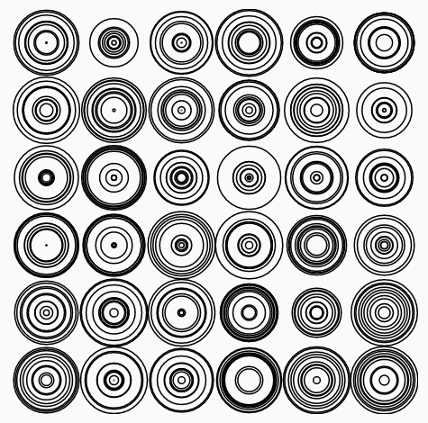
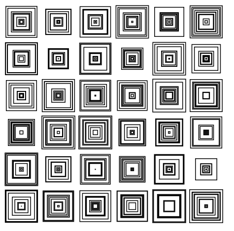

from joy import *4 Home Work - 04
4.1 Problem 1: Random Concentric Circles in a 6x6 Grid
Arrange random concentric circles in a 6x6 grid as shown in the image below.

def circle_row(n):
return circle(x=-125, y=125, r=(25))|repeat(n, translate(x=50))circle_row(6)|repeat(6, translate(y=-50))4.2 Problem 2: : Random Concentric Squares in a 6x6 Grid
Can you make the solution to the above problem generic enough that it could be used to make a 6x6 grid of random concentric squares as shown in the image below.

def square_row():
return rectangle(w=45, h=45, x=-125, y=125)|repeat(6, translate(x=50))square_row()square_row()|repeat(6, translate(y=-50))4.3 Problem 3: Concentric circles
Write a function concentric_circles that takes two arguments r and n, and creates n concentric circles with the outer most circle with radius r and with all circles equally distributed from the center, as shown in the pictures below.

concentric_circles(r=100, n=2)
|
concentric_circles(r=100, n=4)
|
concentric_circles(r=100, n=8)
|
def concentric_circles(n=4):
return circle(r=100)| repeat(n, scale(1-1/n))concentric_circles()4.4 Problem 4: Concentric Circles in a Grid
Write a program to create a grid of concentric circles as shown in the image below.
from wizard import *
def repeat4(shape):
return grid(shape, shape, shape, shape)
def grid(s1, s2, s3, s4):
return below(
beside(s1, s2),
beside(s3, s4))
def grid_1(shape_maker):
return grid(shape_maker(), shape_maker(), shape_maker(), shape_maker())
def grid_2(shape_maker):
def grid_maker():
return grid_1(shape_maker)
return grid_1(grid_maker)grid_2(concentric_circles)4.5 Problem 5: Ellipse Stars in a Grid
Can you generalize the above program and use it to draw ellipse stars in a grid instead of concentric circles.